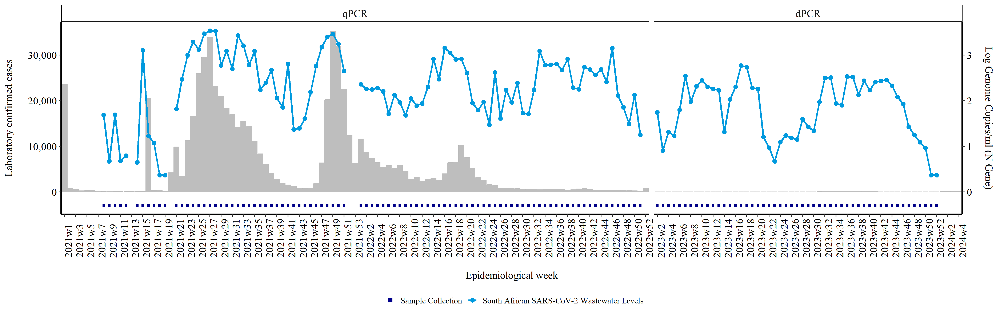
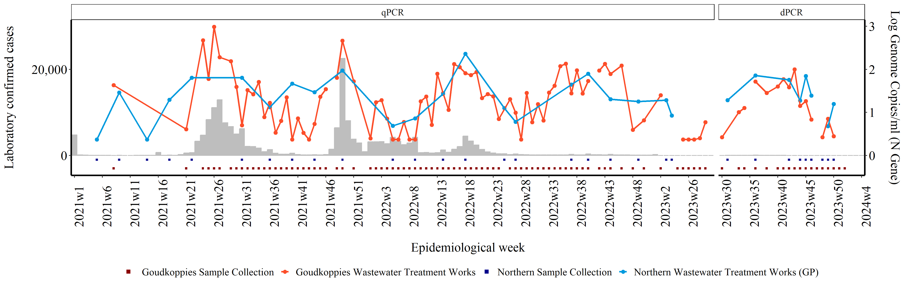

SARS-CoV-2 Quantitative Levels Analysis
The National Institute for Communicable Diseases (NICD) currently oversees SARS-CoV-2 surveillance through two key methods: tracking changes in reported clinical cases documented in the NICD's Notifiable Medical Conditions Reporting's(NMC) register, and observing variations in SARS-CoV-2 levels detected by performing a PCR test on wastewater samples. These dual metrics, clinical data and wastewater analysis, can be conveniently visualized together in a unified graph. This guide offers detailed instructions on performing such analysis and visualization.
The graphs are produced using R version 4.2.2 or higher and the following packages are required to run the script:
library (ggplot2)
library(ggthemes)
library(scales)
library(tidyverse)
library(readxl)
library(dplyr)
library(lubridate)
library(rlang)
library(writexl)
Preparing clinical case data
Access to clinical data is restricted, and permissions must be obtained from the NMC. Once Access is obtained, clinical case data is downloaded from the NMC linelist. The data is exported as excel files. Due to the large volume of cases in some years, there may be multiple excel files produced, as excel has a limit in the number of rows that per file. The first step would be import all the files into R dataframes:
cov211<- read_xlsx("/path/to/file/SARS//covid_21_1.xlsx")
cov212<- read_xlsx("/path/to/file/SARS//covid_21_2.xlsx")
cov213<- read_xlsx("/path/to/file/SARS//covid_21_3.xlsx")
cov214<- read_xlsx("/path/to/file/SARS//covid_21_4.xlsx")
cov215<- read_xlsx("/path/to/file/SARS//covid_21_5.xlsx")
cov216<- read_xlsx("/path/to/file/SARS//covid_21_6.xlsx")
cov217<- read_xlsx("/path/to/file/SARS//covid_21_7.xlsx")
cov218<- read_xlsx("/path/to/file/SARS//covid_21_8.xlsx")
cov219<- read_xlsx("/path/to/file/SARS//covid_21_9.xlsx")
cov2110<- read_xlsx("/path/to/file/SARS//covid_21_10.xlsx")
cov2111<- read_xlsx("/path/to/file/SARS//covid_21_11.xlsx")
cov221<- read_xlsx("/path/to/file/SARS//covid_22_1.xlsx")
cov222<- read_xlsx("/path/to/file/SARS//covid_22_2.xlsx")
cov223<- read_xlsx("/path/to/file/SARS/covid_22_3.xlsx")
cov23<- read_xlsx("/path/to/file/SARS/covid_23.xlsx")
cov24<- read_xlsx("/path/to/file/SARS/covid_24.xlsx")
Now that we have multiple dataframes created, we want to create one dataframe to work with. To do this we are going to bind each of the dataframes into one "covcases" dataframe using the bind_rows command. Bind rows allows you to merge dataframe that have the same column names in such a way that all the rows in one dataframe are added below the rows of another.
covcases <- bind_rows(cov211, cov212, cov213, cov214, cov215, cov216, cov217, cov218, cov219,
cov2110, cov2111, cov221, cov222,cov223, cov23, cov24)
At this point, you may want to have a look at the clinical cases in the dataframe (df) in which case you can view them using: View(cases)
If you're unsure of all the disctricts included in the df, you can create a table to count all the unique districts
table(covcases$District)
As there are many districts across the country, we only want to filter for districts in which we collect wastewater samples. To do this we'll use the filter command from the tidyverse library.
covcases <- covcases %>%
filter(District == "GP CITY OF JOHANNESBURG METRO" | District == "City of Johannesburg Metro" |
District == "FS MANGAUNG METRO" | District == "Mangaung Metro" |
District == "EC NELSON MANDELA BAY METRO" | District == "eThekwini Metro" |
District == "GP CITY OF TSHWANE METRO" | District == "City of Tshwane Metro" |
District == "GP EKURHULENI METRO" | District == "Ekurhuleni Metro" |
District == "KZN ETHEKWINI METRO" | District == "eThekwini Metro" |
District == "WC CITY OF CAPE TOWN METRO" | District == "City of Cape Town Metro" |
District == "EC BUFFALO CITY METRO"| District == "Buffalo City Metro" |
District == "NW BOJANALA PLATINUM"| District == "Bojanala Platinum" |
District == "NW DR KENNETH KAUNDA"| District == "Dr Kenneth Kaunda" )
For most surveillance reports produced by the NICD, results are reported according to epidemiological weeks (epiweeks). For this report we will also be using epiweeks to report our findings. In order to convert the sample collection dates to epiweeks, we'll use the lubridate library to create a new column with the epiweeks of laboratory confirmed SARS-CoV-2 cases:
covcases <- covcases %>%
filter(Diagnosis_Method == "Laboratory confirmed")
covcases$newcoldate <- format(as.Date(covcases$Notification_Date, format = "%Y/%m/%d"), "%Y-%m-%d") #changing the format of the date from y/m/d to ymd
covcases$epiweek <- lubridate::epiweek(ymd( covcases$newcoldate)) #generate epiweek
In the epiweek column you will find a number representing the epiweek the sample was collected in. For example, if a sample was collected on 2024-04-25, then the number would be "17". However, we like to report our epiweeks with the year combined (eg 2024w17). This is just a matter of preference, and may be modified to suit your preferences. In order to add the year onto the epiweek with a "w" inbetween, we first create a column with the year the sample was created, and then another column with "w" and concatenate the year, "w" and epiweek column to get our desired format:
covcases$year <- strftime(covcases$newcoldate, "%Y") #Creating year column
covcases$week <- "w" #added column with w
my_cols <- c("year", "week", "epiweek") #new data object with 3 columns combined
covcases$epiweek2 <- do.call(paste, c(covcases[my_cols],sep ="")) #created new variable using concat columns
cases1 <- covcases
Since we report findings nationally and at a district level, we want to also create dataframes for each district. We'll do this by filtering for only the clinical cases found in that district. As R is case-sensitive, we'll filter for all variations in spelling of the districts found in the linelist.
joburg_cases <- cases1 %>%
filter(District == "GP CITY OF JOHANNESBURG METRO" | District == "City of Johannesburg Metro")
mangaung_cases <- cases1 %>%
filter(District == "FS MANGAUNG METRO" | District == "Mangaung Metro")
nelson_cases <- cases1 %>%
filter(District == "EC NELSON MANDELA BAY METRO" | District == "eThekwini Metro" )
tshwane_cases <- cases1 %>%
filter( District == "GP CITY OF TSHWANE METRO" | District == "City of Tshwane Metro")
ekurhuleni_cases <- cases1 %>%
filter(District == "GP EKURHULENI METRO" | District == "Ekurhuleni Metro" )
ethekwini_cases <- cases1 %>%
filter(District == "KZN ETHEKWINI METRO" | District == "eThekwini Metro")
capetown_cases <- cases1 %>%
filter(District == "WC CITY OF CAPE TOWN METRO" | District == "City of Cape Town Metro" )
buffalo_cases <- cases1 %>%
filter(District == "EC BUFFALO CITY METRO"| District == "Buffalo City Metro" )
bojanala_cases <- cases1 %>%
filter(District == "NW BOJANALA PLATINUM"| District == "Bojanala Platinum" )
jb_marks_cases <- cases1 %>%
filter(District == "NW DR KENNETH KAUNDA"| District == "Dr Kenneth Kaunda" )
Preparing wastewater levels
There are two ways in which you can import the wastewater data in this R script. The first is by importing a csv file
water <- read.csv("path/to.file.csv")
Or using an API token from RedCap, which is the data management system used by our team. We usually use the API token as it allows us to automatically run this script without having to first download directly from RedCap.
token <- "insert your private token here"
url <- "insert RedCap URL here"
formData <- list("token"=token,
content='record',
action='export',
format='csv',
type='flat',
csvDelimiter='',
rawOrLabel='label',
rawOrLabelHeaders='raw',
exportCheckboxLabel='false',
exportSurveyFields='false',
exportDataAccessGroups='false',
returnFormat='json'
)
response <- httr::POST(url, body = formData, encode = "form")
result <- httr::content(response)
water <- result
We then filter for the wastewater treatment plants (WWTP) that we would like to include in the report:
water <- water %>%
filter( site_name == "Northern Wastewater Treatment Works (GP)" |
site_name == "Northern Wastewater Treatment Works (KZN)"|
site_name == "Rooiwal Wastewater Treatment Works"|
site_name == "ERWAT Vlakplaat Wastewater Treatment Works"|
site_name == "Central Wastewater Treatment Works (KZN)"|
site_name == "Goudkoppies Wastewater Treatment Works"|
site_name == "Hartebeesfontein Waterworks"|
site_name == "Daspoort Wastewater Treatment Works" |
site_name == "Zandvleit Wastewater Treatment Works"|
site_name == "Borcheds Quarry Wastewater Treatment Works"|
site_name == "Brickfield Pre-treatment Works" |
site_name == "Sterkwater Wastewater Treatment Works"|
site_name == "Bloemspruit Wastewater Treatment Works"|
site_name == "Kwanobuhle Wastewater Treatment Works" |
site_name == "East Bank Wastewater Treatment Works"|
site_name == "Mdantsane Wastewater Treatment Works" |
site_name == "Mmabatho Water Treatment Works" |
site_name == "Musina WWTW (in town)" |
site_name == "Kingstonvale"|
site_name == "Boitekong"|
site_name == "Rustenburg Wastewater Treatment Works" |
site_name == "Nancefield"|
site_name == "Komatipoort Sewage plant"|
site_name == "Mahikeng Water TreatmentWorks")
We then generate an epiweeks column for the wastewater samples based on the sample collection dates. We also set up the columns we need by simplifying the column names, and creating a column with the log genome copies per ml
water1 <- water
water1 <- water1 %>% arrange(ymd(water1$sam_col_date))
water1$epiweek <- lubridate::epiweek(ymd(water1$sam_col_date)) #generate epiweek
water1$year <- strftime(water1$sam_col_date, "%Y") #Creating year column
water1$week <- "w" #added column with w
my_cols <- c("year", "week", "epiweek") #new data object with 3 columns combined
water1$epiweek2 <- do.call(paste, c(water1[my_cols],sep ="")) #created new variable using concat columns
water1$levels <- water1$n_gene_ml
water1$Date <- water1$sam_col_date
water1$Result <-water1$sars_cov_2_pcr_result
water1 <- water1 %>%
mutate(levels = na_if(levels, levels < 0))
water1 <- water1 %>%
mutate(levels = if_else(levels<2.34, 2.34, levels)) #replace lower than 2.34 with 2.34 (limit of quantification for qPCR)
water1$loglevels <- log10(water1$levels)
Since wastewater levels were initially tested using a qPCR and later change to dPCR, we add a quality check for the "PCR" column which ensure the correct type of PCR is indicated based on when we switched to dPCR (epiweek 30 of 2023)
water1 <- water1 %>%
mutate(PCR = if_else(year == 2021, "qPCR", PCR)) %>%
mutate(PCR = if_else(year == 2022, "qPCR", PCR)) %>%
mutate(PCR = if_else(year == 2023 & week < 30, "qPCR", PCR)) %>%
mutate(PCR = if_else(year == 2023 & week > 30, "dPCR", PCR)) %>%
mutate(PCR = if_else(year == 2024, "dPCR", PCR))
Plotting clinical cases against wastewater levels
We'll start by plotting the national waterwater levels against the clinical cases. The wasterwater levels will be in the form of a line graph, and bars will be used to represent the number of clinical cases.
We start by tabulating the number of samples received
rsa_samples <- cases1 %>%
group_by(epiweek2)%>%
count(epiweek2, na.rm=TRUE)
rsa_water <- water1 %>%
filter( Site.Name. == "Goudkoppies Wastewater Treatment Works" |
Site.Name. == "Northern Wastewater Treatment Works"|
Site.Name. == "Rooiwal Wastewater Treatment Works" |
Site.Name. == "Daspoort Wastewater Treatment Works" |
Site.Name. == "ERWAT Vlakplaat Wastewater Treatment Works" |
Site.Name. == "Hartebeesfontein Waterworks" |
Site.Name. == "Zandvleit Wastewater Treatment Works" |
Site.Name. == "Borcheds Quarry Wastewater Treatment Works" |
Site.Name. == "East Bank Wastewater Treatment Works " |
Site.Name. == "Mdantsane Wastewater Treatment Works"|
Site.Name. == "Brickfield Pre-treatment Works " |
Site.Name. == "Kwanobuhle Wastewater Treatment Works"|
Site.Name. == "Sterkwater Wastewater Treatment Works " |
Site.Name. == "Bloemspruit Wastewater Treatment Works"|
Site.Name. == "Central Wastewater Treatment Works " |
Site.Name. == "Northern Wastewater Treatment Works"|
Site.Name. == "Mahikeng Water Treatment Works"|
Site.Name. == "Mmabatho Water Treatment Work"|
Site.Name. == "Rustenburg Wastewater Treatment Works")
rsacopies <- rsa_water %>%
group_by(epiweek2)%>%
summarise(sum_genomes = sum(levels,na.rm = TRUE),
.groups = 'keep')
rsacopies["sum_genomes"][rsacopies["sum_genomes"] == 0] <- NA
rsacases_vs_water<- full_join(rsa_samples, rsa_water, by= "epiweek2")
rsacases_vs_water<- full_join(rsacases_vs_water, rsacopies, by= "epiweek2")
We then repeat this for weeks where there are clinical cases but no wastewater samples otherwise it would be blank
rsacases_vs_water <- rsacases_vs_water %>%
mutate(PCR = if_else(year == 2021, "qPCR", PCR)) %>%
mutate(PCR = if_else(year == 2022, "qPCR", PCR)) %>%
mutate(PCR = if_else(year == 2023 & week < 30, "qPCR", PCR)) %>%
mutate(PCR = if_else(year == 2023 & week > 30, "dPCR", PCR)) %>%
mutate(PCR = if_else(year == 2024, "dPCR", PCR)) %>%
mutate(PCR = if_else(is.na(PCR), "qPCR", PCR))
rsacases_vs_water$final_result <- rsacases_vs_water$SARS.CoV.2.PCR.result
Since we don't need all the columns currently in the dataframe, select the columns we want, which is a bit easier to work with. rsacases_vs_water <- rsacases_vs_water %>% select(epiweek2, n, sum_genomes, Date, PCR)
We calculate log10 of sum_genomes and store it in a new column loglevels
rsacases_vs_water$loglevels <- log10(rsacases_vs_water$sum_genomes)
In our reports we use square markers to indicate weeks where samples were tested. We place these markers below zero on the x-axis, in line with the corresponding epiweek. In order to do this we create a new column (tested). We use the mutate function to create these columns and assign the value -0.3 if a sample was tested. The values -0.3 is arbitrary, and was selected to ensure the marker is graphed below zero.
rsacases_vs_water<- rsacases_vs_water %>%
mutate(tested = case_when( (sum_genomes > 0) ~ -0.3)) %>%
mutate(n = if_else(is.na(n), 0, n)) #replace na with 0
Before plotting, we want to ensure that the correct order of the epiweeks such that the order is by year first, then week. To do this we first create a copy of epiweek2 and name it epiweek3
rsacases_vs_water$epiweek3 <- rsacases_vs_water$epiweek2
Then we split the epiweek3 column into a "year" column and a "week" column. We then convert the values in these columns into integers.
rsacases_vs_water <- rsacases_vs_water %>%
separate(epiweek3, sep = "w", into = c("year", "week")) %>%
mutate(across(c("year", "week"), as.integer))
Since we only started testing wastewater samples for SARS-CoV-2 in 2021, we filter out and clinical samples from 2020
rsacases_vs_water <- rsacases_vs_water %>%
filter(year != 2020)
Now we can order the samples first by year and then week
rsacases_vs_water <- rsacases_vs_water[ #ordering by year first then week
with(rsacases_vs_water, order(year, week)),
]
To ensure this order stays the same when we're plotting the graph, we conver epiweek2 into an ordered factor.
rsacases_vs_water$epiweek2 <- factor(rsacases_vs_water$epiweek2, levels = unique(rsacases_vs_water$epiweek2), ordered = T)
Add a new column "Country" with a constant value.
rsacases_vs_water$Country <- "South African SARS-CoV-2 Wastewater Levels"
rsacases_vs_water$Date <- "w"
Remove duplicated rows
rsacases_vs_water <- rsacases_vs_water %>% distinct()
Create a new column 'end' by parsing date and time using the lubridate package. Then we concatenate year, week, and 0 with "-" as separator to form a string. Specify the format 'Y-W-w' where 'Y' is year, 'W' is week, and 'w' is the day of the week (0 = week start on Sunday).Add 6 days to the parsed date to get the end of the epidemiological week. This function parses the concatenated string into a date-time object.The resulting date represents the start of the epidemiological week, so adding 6 days gives the end of the week. This is mainly used for getting the last day of the epidemilogical week which is used on the dashboard.
rsacases_vs_water$end <- lubridate::parse_date_time(paste(rsacases_vs_water$year, rsacases_vs_water$week,0, sep="-"),'Y-W-w') + days(6)
#lubridate::parse_date_time(year, week, 0= week start on sunday, sep = formwat you want)
#this gives start of epiweek so add 6 days to get end of epiweek
This next line of code is only necessary if you have many samples spanning multiple years. You may want to only show every nth epiweek on the graph instead of every week as this may appear cluttered. This funtion allows you to return every nth element. When added to the graph, you specify the value of n.
every_nth = function(n) {
return(function(x) {x[c(TRUE, rep(FALSE, n - 1))]})
}
We then plot the graph.This line opens a PNG device to create a file named overall_rsa.png. The dimensions are set to 5 times 950 pixels in width and 5 times 300 pixels in height. The resolution is set to 300 DPI. The point size for text and points in the plot is set to 8.
png("/path/to/file/overall_rsa.png", # Create a PNG file for the plot
width = 5 * 950, # Set width of the image
height = 5 * 300, # Set height of the image
res = 300, # Set resolution of the image
pointsize = 8) # Set point size for the image
This initializes a ggplot object using the rsacases_vs_water data frame.
rsaplot <- ggplot(rsacases_vs_water) + # Create a ggplot object with rsacases_vs_water data frame
This adds points to the plot representing the tested samples multiplied by 10000. Points are grouped by 1 and colored according to "Sample Collection". The size of the points is set to 1, and the shape is set to 15.
geom_point(aes(x = epiweek2, y = tested * 10000, group = 1, col = "Sample Collection"), stat = "identity", size = 1, shape = 15) + # Add points for sample collection
This adds a bar plot for the number of samples (n) for each epidemiological week (epiweek2). Bars are filled and colored gray.
geom_bar(aes(x = epiweek2, y = n), stat = "identity", fill = "gray", colour = "gray") + # Add bar plot for number of cases
This adds points for log genome copies multiplied by 10000. Points are grouped and colored by the Country variable. The size of the points is set to 2.
geom_point(aes(x = epiweek2, y = loglevels * 10000, group = Country, col = Country), stat = "identity", size = 2) + # Add points for log genome copies
This adds lines for log genome copies multiplied by 10000. Lines are grouped and colored by the Country variable. The size of the lines is set to 1.
geom_line(aes(x = epiweek2, y = loglevels * 10000, group = Country, col = Country), stat = "identity", size = 1) + # Add lines for log genome copies
This sets the x-axis breaks to show every 2nd label
scale_x_discrete(breaks = every_nth(n = 2)) + # Set x-axis breaks to show every 2nd label
This manually sets the colors for the points and lines. "Sample Collection" is colored dark blue. "South African SARS-CoV-2 Wastewater Levels" is colored #009ADE (a shade of blue).
scale_colour_manual(values = c("Sample Collection" = "darkblue", "South African SARS-CoV-2 Wastewater Levels" = "#009ADE")) + # Set custom colors for the points and lines
This customizes the legend, overriding the aesthetics for shape and line type.
guides(color = guide_legend(override.aes = list(shape = c(15, 16), linetype = c(0, 1)))) + # Customize legend
This sets the y-axis to have a secondary axis for log genome copies divided by 10000. The secondary axis is labeled "Log Genome Copies/ml (N Gene)". The y-axis has 4 breaks, and labels are formatted with comma
scale_y_continuous(sec.axis = sec_axis(~ . / 10000, name = "Log Genome Copies/ml (N Gene)\n"), # Create secondary y-axis for log genome copies
breaks = scales::pretty_breaks(n = 4), # Set breaks for the y-axis
labels = scales::label_comma()) + # Format y-axis labels with commas
This adds labels to the x-axis ("Epidemiological week") and y-axis ("Laboratory confirmed cases").
labs(x = "\nEpidemiological week", y = "Laboratory confirmed cases\n") + # Add axis labels
This creates facets for the PCR variable, with levels "qPCR" and "dPCR". The x-axis scales are free within each facet, and the spacing is free.
facet_grid(~factor(PCR, levels = c('qPCR', 'dPCR')), scales = "free_x", space = "free_x") + # Create facets for PCR method with free scales
This customizes various theme elements: x-axis text is rotated 90 degrees, aligned horizontally at 0, colored black, and sized 12. y-axis text is colored black and sized 12. The legend is positioned at the bottom, and its title is removed. General text is colored black and sized 12. x-axis and y-axis lines are colored black and sized 1. Facet background is white, and facet text is sized 12
ggthemes::theme_tufte() + # Apply Tufte theme
theme(
axis.text.x = element_text(angle = 90, hjust = 0, color = "black", size = 12), # Customize x-axis text
axis.text.y = element_text(color = "black", size = 12), # Customize y-axis text
legend.position = "bottom", # Place legend at the bottom
legend.title = element_blank(), # Remove legend title
text = element_text(color = "black", size = 12), # Set general text properties
axis.line.x = element_line(color = "black", size = 1), # Customize x-axis line
axis.line.y = element_line(color = "black", size = 1), # Customize y-axis line
strip.background = element_rect(fill = "white"), # Customize facet background
strip.text = element_text(size = 12) # Customize facet text
)
This line displays the ggplot object created.
rsaplot # Plot the ggplot object
This closes the PNG device, saving the plot to the file.
dev.off() # Close the PNG device

Creating a district level plot
Below is the continuation and completion of the detailed guide for performing SARS-CoV-2 quantitative levels analysis using R. This guide includes plotting the data at a district level. In the example below we have selected Johannesburg as our district of interest. For other districts, replace the District Name and Site Names for your district of interest.
First start by tabulating the number of samples received. We do this by grouping the samples by epidemiological week and then counting the number of samples per week.
jhb_samples <- joburg_cases %>%
group_by(epiweek2)%>%
count(epiweek2, na.rm=TRUE)
Then we filter for samples that were collected in our district of interest and at the wastewater treatment plants of interest. In this case we're filtering for samples collected in the Johannesburg Municipality, at the Goudkoppies and Northern Wastewater Treatment Plants.
jhb_water <- water1 %>%
filter(District.Name == "Johannesburg MM") %>%
filter( Site.Name. == "Goudkoppies Wastewater Treatment Works" |
Site.Name. == "Northern Wastewater Treatment Works (GP)")
We then merge the two data frames and create a new column for the final PCR results.
jhbcases_vs_water<- full_join(jhb_samples, jhb_water, by= "epiweek2")
jhbcases_vs_water$final_result <- jhbcases_vs_water$SARS.CoV.2.PCR.result
We then select relevant columns we would like to work with, and remove rows that have invalid epiweek values i.e all samples in which epiweek2 = NAwNA as these are samples which had no sample collection dates.
jhbcases_vs_water <- jhbcases_vs_water %>%
select(epiweek2, n, Site.Name.,
Site.Province., District.Name,Genome.copies.mL...N.gene.., levels, loglevels, Date, final_result, PCR) %>%
filter(epiweek2 != "NAwNA")
In our reports we use square markers to indicate weeks where samples were tested. We place these markers below zero on the x-axis, in line with the corresponding epiweek. In order to do this we create new columns (tested1 and tested2) for each WWTP. We use the mutate function to create these columns and assign the value -0.3 or -0.1 for each site if a sample was tested and had a Positive or Negative result. The values -0.3 and -0.1 are arbitrary, and were selected to ensure the marker is graphed below zero.
jhbcases_vs_water<- jhbcases_vs_water %>%
mutate(tested1 = case_when( (Site.Name. == "Goudkoppies Wastewater Treatment Works" & final_result == "Positive") ~ -0.3,
(Site.Name. == "Goudkoppies Wastewater Treatment Works" & final_result == "Negative") ~ -0.3)) %>%
mutate(tested2 = case_when( (Site.Name. == "Northern Wastewater Treatment Works (GP)" & final_result == "Positive") ~ -0.1,
(Site.Name. == "Northern Wastewater Treatment Works (GP)" & final_result == "Negative") ~ -0.1))
Before plotting, we want to ensure that the correct order of the epiweeks such that the order is by year first, then week. To do this we first create a copy of epiweek2 and name it epiweek3
jhbcases_vs_water$epiweek3 <- jhbcases_vs_water$epiweek2
Then we split the epiweek3 column into a "year" column and a "week" column. We then convert the values in these columns into integers.
jhbcases_vs_water <- jhbcases_vs_water %>%
separate(epiweek3, sep = "w", into = c("year", "week")) %>%
mutate(across(c("year", "week"), as.integer))
Since we only started testing wastewater samples for SARS-CoV-2 in 2021, we filter out and clinical samples from 2020
jhbcases_vs_water <- jhbcases_vs_water %>%
filter(year != 2020)
Now we can order the samples first by year and then week
jhbcases_vs_water <- jhbcases_vs_water[ #ordering by year first then week
with(jhbcases_vs_water, order(year, week)),
]
To ensure this order stays the same when we're plotting the graph, we conver epiweek2 into an ordered factor.
jhbcases_vs_water$epiweek2 <- factor(jhbcases_vs_water$epiweek2, levels = unique(jhbcases_vs_water$epiweek2), ordered = T)
Initially samples were tested using a qPCR but during 2023, we switched to testing samples using a dPCR. This change is indicated in our graphs using facets which show the type of PCR test performed. To create these facets, we first specify which type of PCR test was performed based on when the samples were collected.
jhbcases_vs_water <- jhbcases_vs_water %>%
mutate(PCR = if_else(year == 2021, "qPCR", PCR)) %>% # Set PCR method for 2021 to qPCR
mutate(PCR = if_else(year == 2022, "qPCR", PCR)) %>% # Set PCR method for 2022 to qPCR
mutate(PCR = if_else(year == 2023 & week < 30, "qPCR", PCR)) %>% # Set PCR method for early 2023 to qPCR
mutate(PCR = if_else(year == 2023 & week > 30, "dPCR", PCR)) %>% # Set PCR method for late 2023 to dPCR
mutate(PCR = if_else(is.na(PCR), "qPCR", PCR)) %>% # Replace NA PCR values with qPCR
mutate(n = if_else(is.na(n), 0, n)) #replace na with 0
This next line of code is only necessary if you have many samples spanning multiple years. You may want to only show every nth epiweek on the graph instead of every week as this may appear cluttered. This funtion allows you to return every nth element. When added to the graph, you specify the value of n.
every_nth = function(n) {
return(function(x) {x[c(TRUE, rep(FALSE, n - 1))]})
}
Then we create the graph and save it as a png file.
png("/path/yo/file/Johannesburg.png", # Create a PNG file for the plot
width = 5*950, # Set width of the image
height = 5*300, # Set height of the image
res = 300, # Set resolution of the image
pointsize = 8) # Set point size for the image
jhbplot <- ggplot(jhbcases_vs_water) + # Create ggplot object with jhbcases_vs_water data frame
geom_bar(aes(x = epiweek2, y = n), stat = "identity", fill = "gray", colour = "gray") + # Add bar plot for number of cases
geom_point(aes(x = epiweek2, y = tested1 * 10000, group = 1, col = "Goudkoppies Sample Collection"), stat = "identity", size = 1, shape = 15) + # Add points for Goudkoppies sample collection
geom_point(aes(x = epiweek2, y = tested2 * 10000, group = 1, col = "Northern Sample Collection"), stat = "identity", size = 1, shape = 15) + # Add points for Northern sample collection
geom_point(aes(x = epiweek2, y = loglevels * 10000, group = Site.Name., col = Site.Name.), stat = "identity", size = 2) + # Add points for log genome copies
geom_line(aes(x = epiweek2, y = loglevels * 10000, group = Site.Name., col = Site.Name.), stat = "identity", size = 1) + # Add lines for log genome copies
scale_colour_manual(values = c("Goudkoppies Sample Collection" = "darkred", "Northern Sample Collection" = "darkblue",
"Goudkoppies Wastewater Treatment Works" = "#FC4E2A", "Northern Wastewater Treatment Works (GP)" = "#009ADE")) + # Set custom colors for the points and lines
scale_y_continuous(sec.axis = sec_axis(~ . / 10000, name = "Log Genome Copies/ml (N Gene)\n"), # Create secondary y-axis for log genome copies
breaks = scales::pretty_breaks(n = 2), # Set breaks for the y-axis
labels = scales::label_comma()) + # Format y-axis labels with commas
guides(color = guide_legend(override.aes = list(shape = c(15, 16, 15, 16), # Customize legend
linetype = c(0, 1, 0, 1)))) +
scale_x_discrete(breaks = every_nth(n = 5)) + # Set x-axis breaks to show every 5th label
facet_grid(~factor(PCR, levels = c('qPCR', 'dPCR')), scales = "free_x", space = "free") + # Create facets for PCR method with free scales
labs(x = "\nEpidemiological week", y = "Laboratory confirmed cases\n") + # Add axis labels
ggthemes::theme_tufte() + # Apply Tufte theme
theme(
axis.text.x = element_text(angle = 90, hjust = 0, color = "black", size = 16), # Customize x-axis text
axis.text.y = element_text(color = "black", size = 16), # Customize y-axis text
legend.position = "bottom", # Place legend at the bottom
legend.title = element_blank(), # Remove legend title
text = element_text(color = "black", size = 16), # Set general text properties
axis.line.x = element_line(color = "black", size = 1), # Customize x-axis line
axis.line.y = element_line(color = "black", size = 1), # Customize y-axis line
strip.background = element_rect(fill = "white"), # Customize facet background
strip.text = element_text(size = 12)) # Customize facet text
jhbplot # Plot the ggplot object
dev.off() # Close the PNG device
